Studio Roses · RafaPartimos de lo que hablamos el 23 de octubre. Ahora queremos el estudio entero: qué hacéis de la A a la Z, cómo se reparte y se dirige, y hacia dónde vais.
Cada pregunta tiene un botón de micrófono. Tu voz se graba aquí mismo, en el ordenador o en el móvil. La primera vez, acepta el permiso del micrófono.
En esta páginaCada respuesta tiene su caja. Habla, escribe o mezcla las dos cosas: lo que te resulte más cómodo.
Sin apps externasSeis bloques cortos. Lo que respondes se guarda solo: puedes cerrar y seguir otro día desde el mismo dispositivo.
Se guarda solo